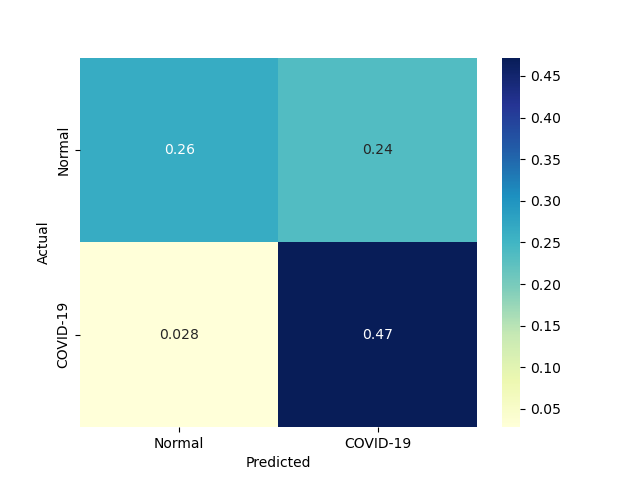

| 8 |
MLP |
Multi-layer Perceptron classifier. |
0.579232 |
0.002714 |
106 |
89 |
36 |
19 |
0.848 |
0.712 |
0.746479 |
0.780 |
0.220 |
0.794007 |
1.160197 |
1.370795 |
292.517241 |
|
|
|
| 6 |
NonLinearSVM |
Non Linear Support Vector Classification |
0.031247 |
0.015623 |
118 |
66 |
59 |
7 |
0.944 |
0.528 |
0.666667 |
0.736 |
0.264 |
0.781457 |
1.056983 |
25.008912 |
50.020878 |
|
 |
|
| 7 |
LP |
Linear perceptron classifier |
0.008795 |
0.000000 |
101 |
83 |
42 |
24 |
0.808 |
0.664 |
0.706294 |
0.736 |
0.264 |
0.753731 |
1.047083 |
85.704405 |
inf |
|
|
|
| 5 |
LinearSVM |
Linear Support Vector Classification |
0.109533 |
0.000000 |
100 |
82 |
43 |
25 |
0.800 |
0.656 |
0.699301 |
0.728 |
0.272 |
0.746269 |
1.029111 |
6.813181 |
inf |
|
 |
|
| 9 |
AdaBoostClassifier |
An AdaBoost classifier |
23.970535 |
0.374911 |
107 |
73 |
52 |
18 |
0.856 |
0.584 |
0.672956 |
0.720 |
0.280 |
0.753521 |
1.017199 |
0.031435 |
2.009868 |
|
|
|
| 10 |
GradientBoostingClassifier |
An GradientBoost classifier |
53.296853 |
0.000000 |
111 |
66 |
59 |
14 |
0.888 |
0.528 |
0.652941 |
0.708 |
0.292 |
0.752542 |
0.996431 |
0.014120 |
inf |
|
|
|
| 4 |
KNeighborsClassifier |
Classifier implementing the k-nearest neighbors vote |
0.000000 |
0.015665 |
115 |
52 |
73 |
10 |
0.920 |
0.416 |
0.611702 |
0.668 |
0.332 |
0.734824 |
0.930187 |
inf |
46.908505 |
 |
 |
|
| 1 |
RealBoost |
An RealBoost classifier |
112.437513 |
0.015626 |
104 |
60 |
65 |
21 |
0.832 |
0.480 |
0.615385 |
0.656 |
0.344 |
0.707483 |
0.902778 |
0.006292 |
45.275457 |
 |
 |
 |
| 2 |
BernoulliNBC |
Naive Bayes classifier for multivariate Bernoulli models |
0.000000 |
0.015639 |
103 |
60 |
65 |
22 |
0.824 |
0.480 |
0.613095 |
0.652 |
0.348 |
0.703072 |
0.895802 |
inf |
44.955429 |
 |
 |
 |
| 3 |
GaussianNBC |
Gaussian Naive Bayes (GaussianNB) |
0.000000 |
0.000000 |
114 |
23 |
102 |
11 |
0.912 |
0.184 |
0.527778 |
0.548 |
0.452 |
0.668622 |
0.772728 |
inf |
inf |
|
 |
 |
| 0 |
DiscreteNBC |
DiscreteNBC |
0.328105 |
0.203074 |
72 |
68 |
57 |
53 |
0.576 |
0.544 |
0.558140 |
0.560 |
0.440 |
0.566929 |
0.734551 |
1.727887 |
2.791734 |
 |
 |
 |
{kind=link}
{kind=link}
{kind=link}
{kind=link}
{kind=link}
{kind=link}
{kind=link}
{kind=link}
{kind=link}
{kind=link}
{kind=link}
{kind=link}
{kind=link}
{kind=link}
{kind=link}
{kind=link}
{kind=link}
{kind=link}
{kind=link}